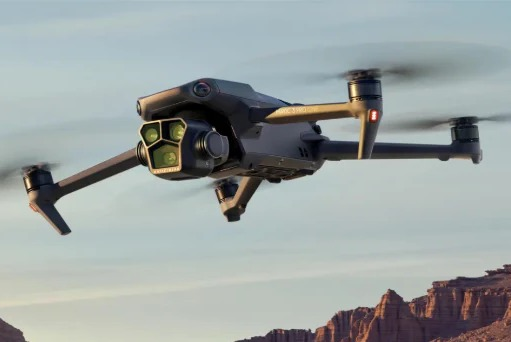
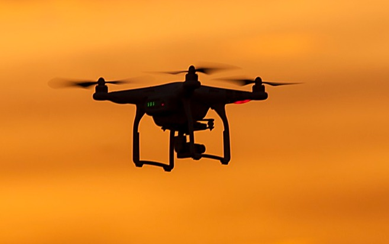
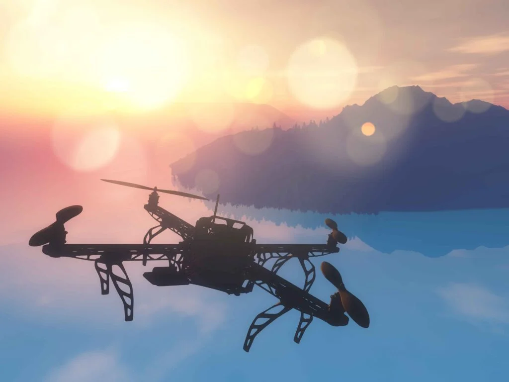
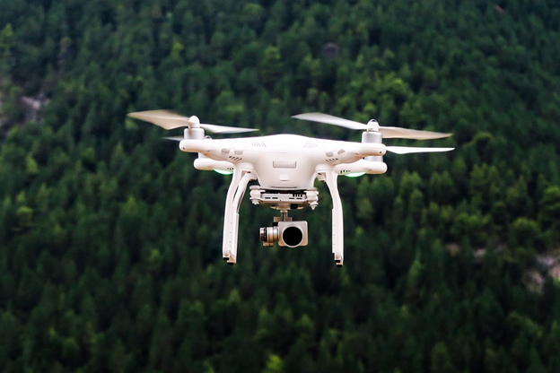

Best AI Website Maker
Drony sú malé lietajúce zariadenia ovládané diaľkovo alebo programovo, ktoré zohrávajú vo vzdelávaní čoraz dôležitejšiu úlohu. Ich využitie dáva žiakom možnosť nielen teoreticky sa zoznámiť s modernými technológiami, ale aj si ich vyskúšať v praxi. Zapojenie dronov do vyučovania robí učenie zaujímavejším a zábavnejším, pričom približuje učivo k každodenným skúsenostiam žiakov.
Úlohy s dronmi zabezpečujú zážitkové učenie. Žiaci sa aktívne zapájajú do práce: plánujú let, riadia zariadenie a spoločne riešia rôzne úlohy. Tento proces rozvíja ich myslenie, schopnosť riešiť problémy a samostatnú prácu. Okrem toho používanie dronov pomáha žiakom lepšie pochopiť fungovanie technológie a sebavedomejšie používať digitálne zariadenia pri učení.

Počas hodín s dronmi sa žiaci rozvíjajú v niekoľkých dôležitých oblastiach:
• naučia sa logicky uvažovať,
• rozvíjajú si manuálnu zručnosť a priestorovú orientáciu,
• precvičujú si spoluprácu a tímovú prácu,
• naučia sa, ako naplánovať a zrealizovať úlohu.
Tieto zručnosti budú užitočné nielen v škole, ale aj v neskoršom živote.

Na hodinách informatiky môžu žiaci ovládať drony pomocou jednoduchých programov. Takto sa hravou formou naučia základy programovania a algoritmického myslenia.
Drony sa dajú dobre využiť pri výučbe tém týkajúcich sa pohybu, rýchlosti a meraní. Žiaci môžu na vlastné oči vidieť, ako sa naučené vzorce uplatňujú v praxi.
Pomocou dronov je možné pozorovať charakteristické črty krajiny, tvary povrchu a zmeny v prostredí. To môže byť obzvlášť užitočné pri výletoch alebo terénnych cvičeniach.
Fotografovanie a natáčanie videí z vtáčej perspektívy rozvíja kreativitu a vizuálne myslenie. Študenti sa naučia základné techniky fotografovania a natáčania videí.

V rámci vzdelávania je dôležité, aby sa drony používali bezpečne a zodpovedne. Žiaci sa oboznámia so základnými pravidlami, napríklad kde a ako možno lietať s dronom, a tiež s tým, ako dbať na bezpečnosť ostatných.
Dodržiavanie pravidiel prispieva k tomu, aby bolo používanie dronov pre všetkých bezpečné a príjemné.
Best AI Website Maker